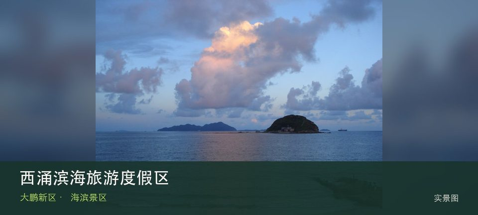

适合谁
适合愿意购票并服从泳区、预约和交通管理的游客；不适合沿未开放海岸线穿越东西涌。

SHENZHEN GUIDE · 282
南澳 · 海滨景区
西涌滨海旅游度假区位于南澳西涌，长沙滩、划定泳区、天文台接驳与分入口运营形成复杂滨海目的地，票务和海况必须同时确认。把注意力放在西涌长沙滩和划定泳区与救生服务，能避免只凭名称或网红照片判断这里。海岸体验取决于西涌长沙滩与划定泳区与救生服务当天的风浪、潮位和运营边界，不宜把旧照片当成实时承诺。先确定安全退路和返程节点，遇雷雨、台风影响或封闭提示就缩短行程。
WHY GO
适合愿意购票并服从泳区、预约和交通管理的游客；不适合沿未开放海岸线穿越东西涌。
先确认票种、开放入口、泳区和预警，再选择一个沙滩入口活动；不借天文台预约逃避海滩票务。
公共交通先到南澳西涌片区，再以西涌滨海旅游度假区公开参观入口为终点；多入口地点须按计划游线选择入口，并预先锁定返程站点。
按所购入口使用对应海滩停车场，旺季先查预约、限行和接驳；停车满位就改乘接驳或放弃驶入核心区。
10 月至次年 4 月体感较舒适；夏季亲水先查海况，雷暴、台风影响或大浪提示下不靠近水线。
NEARBY IDEAS
 编辑配图·非现场实景
编辑配图·非现场实景
鹤薮古村位于西涌腹地，传统村屋、巷道和田园位于热门海滩背后，仍有居民生活，价值在理解滨海聚落而非把村子当免费停车场。
 编辑配图·非现场实景
编辑配图·非现场实景
西贡村位于南澳街道西贡片区，海岸村落的旧巷、民居和渔业生活记录大鹏半岛与香港西贡之间的历史地缘联系。
 授权实景图
授权实景图
深圳市天文台位于西涌山海之间，气象与天文业务场所、山海步道和观测设备构成免费预约参观，名额、步行坡度和天气共同决定能否成行。